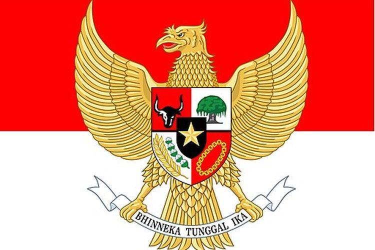

Garuda Pancasila
Ancaman di Bidang Ideologi
- Indonesia menolak komunisme sebagai ancaman bagi Pancasila, Indonesia telah menolak komunisme sebagai ideologi yang bertentangan dengan nilai-nilai Pancasila.
- Pengaruh liberalisme, Liberalisme adalah paham yang berbasis pada kebebasan individu dalam politik, ekonomi, dan agama. Meskipun memiliki aspek positif seperti kemajuan dan kemakmuran, namun juga membawa pengaruh negatif seperti gaya hidup mewah dan pergaulan bebas yang bertentangan dengan kepribadian bangsa Indonesia.
- Keseimbangan dan keselarasan, Indonesia harus menjaga keseimbangan dan keselarasan antara manusia, alam, masyarakat, dan Tuhan. Hal ini diperlukan untuk mempertahankan kebudayaan nasional dan kesatuan bangsa.
- Toleransi dan persatuan, Indonesia harus bersikap toleran terhadap keberagaman dan berkomitmen untuk hidup bersatu sebagai satu bangsa.
Ancaman di Bidang Politik
- Ancaman politik dari luar, Ancaman politik dapat berupa tekanan politik yang dilakukan oleh negara lain dengan intimidasi, provokasi, atau blokade politik.
- Ancaman politik dari dalam, Ancaman politik dari dalam negeri dapat berupa upaya menumbangkan atau melemahkan pemerintah dengan kekuatan massa atau politik. Ancaman lainnya adalah separatisme yang menggunakan perjuangan bersenjata atau tidak bersenjata untuk menarik simpati internasional.
- Pertahanan non-militer, Indonesia perlu menggunakan fungsi pertahanan non-militer untuk mengatasi ancaman politik ini. Keseimbangan dan keserasian antara manusia, alam, masyarakat, Tuhan, serta kemajuan lahir dan batin harus dijaga untuk menciptakan toleransi yang tinggi dan hidup dalam keragaman.
Ancaman di Bidang Ekonomi
- Globalisasi ekonomi, Globalisasi ekonomi membuat ekonomi suatu negara terbuka dan tergantung pada negara lain. Proses ini memungkinkan pergerakan barang, jasa, teknologi, dan modal yang lebih cepat dan mudah.
- Hambatan perdagangan, Globalisasi ekonomi juga menghapus hambatan perdagangan seperti tarif ekspor atau impor yang tinggi.
Globalisasi ekonomi bisa memberi keuntungan bagi negara yang berpartisipasi, seperti peluang pasar yang lebih luas, kerja sama internasional yang lebih erat, dan kemajuan teknologi yang lebih cepat. Namun, globalisasi ekonomi juga bisa memberi ancaman bagi kedaulatan ekonomi suatu negara, khususnya Indonesia. Beberapa ancaman tersebut adalah:
Ancaman di Bidang Ekonomi
- Banjirnya barang impor yang mengalahkan barang lokal, terutama yang tradisional.
- Dominasi modal asing yang bisa menekan atau mendikte pemerintah atau bangsa kita.
- Kesenjangan sosial yang tajam akibat persaingan bebas yang tidak adil.
- Berkurangnya subsidi untuk sektor ekonomi rakyat, sulitnya perkembangan koperasi, dan rendahnya penyerapan tenaga kerja.
- Memburuknya prospek pertumbuhan ekonomi jangka panjang akibat ketidakstabilan dan ketidakadilan distribusi pendapatan.
Untuk menghadapi globalisasi ekonomi, Indonesia harus melakukan hal-hal berikut:
Upaya untuk Mengatasi Ancaman di Bidang Ekonomi
- Memperkuat perekonomian nasional dengan mengembangkan sektor unggulan dan daya saing.
- Mempertahankan identitas dan nilai-nilai budaya nasional sebagai modal sosial.
- Meningkatkan kualitas sumber daya manusia dengan pendidikan dan pelatihan yang memadai.
- Memperbaiki tata kelola pemerintahan yang bersih, transparan, dan akuntabel.
- Menjaga stabilitas politik, keamanan, dan persatuan nasional.
- Memperluas kerja sama regional dan internasional yang saling menguntungkan dan menghormati kedaulatan negara.
Ancaman di Bidang Sosial Budaya
- Ancaman dari dalam dipicu oleh isu-isu seperti kemiskinan, kebodohan, keterbelakangan, dan ketidakadilan.
- Ancaman dari dalam juga termasuk separatisme, terorisme, kekerasan, dan bencana manusia.
- Ancaman dari luar akibat globalisasi meliputi gaya hidup konsumtif yang suka membeli barang-barang impor.
- Ancaman dari luar juga termasuk sifat hedonisme yang menganggap kenikmatan pribadi sebagai nilai tertinggi.
- Ancaman dari luar juga meliputi sikap individualisme yang hanya mementingkan diri sendiri.
- Ancaman dari luar juga termasuk gejala westernisasi yang meniru budaya barat tanpa seleksi.
- Ancaman dari luar juga meliputi berkurangnya semangat gotong royong, solidaritas, kepedulian, dan kesetiakawanan sosial.
- Ancaman dari luar juga mencakup melemahnya nilai-nilai keagamaan dalam kehidupan bermasyarakat.
Ancaman di Bidang Pertahanan dan Keamanan
- Ancaman militer adalah ancaman yang menggunakan senjata dan kekuatan terorganisir.
- Ancaman militer dapat berupa serangan, pelanggaran wilayah, pemberontakan, sabotase, spionase, terorisme, dan gangguan laut dan udara.
- Bangsa Indonesia pernah diserang oleh Belanda yang ingin menjajah lagi sebanyak dua kali.
- Bangsa Indonesia juga pernah mengalami pemberontakan dari kelompok radikal seperti DI/TII, PRRI, Permesta, PKI Madiun, dan G-30-S/PKI.
- Indonesia memiliki objek vital dan instalasi strategis yang rawan sabotase.
- Indonesia juga memiliki wilayah air dan udara yang terbentang pada jalur transportasi dunia yang padat.
- Kondisi ini berpotensi menimbulkan gangguan laut dan udara seperti pembajakan, penyelundupan, penangkapan ikan ilegal, pencurian sumber daya laut, dan pencemaran lingkungan.
Strategi Mengatasi Berbagai Ancaman terhadap Ipoleksosbudhankam dalam Membangun Integrasi Nasional
| Strategi Mengatasi Ancaman di Bidang Ideologi dan Politik | Strategi Mengatasi Ancaman di Bidang Ekonomi |
|---|---|
| Mengembangkan demokrasi politik. | Memperkuat perekonomian nasional dengan mengembangkan sektor unggulan dan daya saing. |
| Mengaktifkan masyarakat sipil dalam arena politik. | Mempertahankan identitas dan nilai-nilai budaya nasional sebagai modal sosial. |
| Mengadakan reformasi lembaga-lembaga politik agar menjalankan fungsi dan peranannya secara baik dan benar. | Meningkatkan kualitas sumber daya manusia dengan pendidikan dan pelatihan yang memadai. |
| Memperkuat kepercayaan rakyat dengan cara menegakkan pemerintahan yang bersih dan berwibawa. | Memperbaiki tata kelola pemerintahan yang bersih, transparan, dan akuntabel. |
| Menegakkan supremasi hukum. | Menjaga stabilitas politik, keamanan, dan persatuan nasional. |
| Memperkuat posisi Indonesia dalam kancah politik internasional. | Memperluas kerja sama regional dan internasional yang saling menguntungkan dan menghormati kedaulatan negara. |
| Strategi Mengatasi Ancaman di Bidang Sosial Budaya | Strategi Mengatasi Ancaman di Bidang Pertahanan dan Keamanan |
|---|---|
| Masyarakat mengalami perubahan sosial budaya akibat pengaruh teknologi dan kebudayaan dari dalam dan luar. | Strategi pertahanan dan keamanan negara Indonesia didasarkan pada UUD Negara Republik Indonesia Tahun 1945. |
| Masyarakat harus waspada terhadap pengaruh luar yang bisa membahayakan kebudayaan nasional dan kesatuan bangsa. | Sistem pertahanan dan keamanan melibatkan seluruh warga negara, sumber daya nasional, sarana dan prasarana nasional. |
| Masyarakat harus menjaga keseimbangan dan keselarasan antara manusia dengan alam, masyarakat, dan Tuhan. | Sistem ini mengupayakan keterpaduan yang sinergis antara unsur militer dengan unsur nirmiliter. |
| Masyarakat harus toleran terhadap keberagaman dan bertekad untuk hidup bersatu. | Kekuatan pertahanan negara Indonesia disiapkan untuk melaksanakan operasi militer untuk perang (OMP) maupun operasi militer selain perang (OMSP) sesuai dengan ancaman yang dihadapi. |